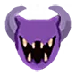
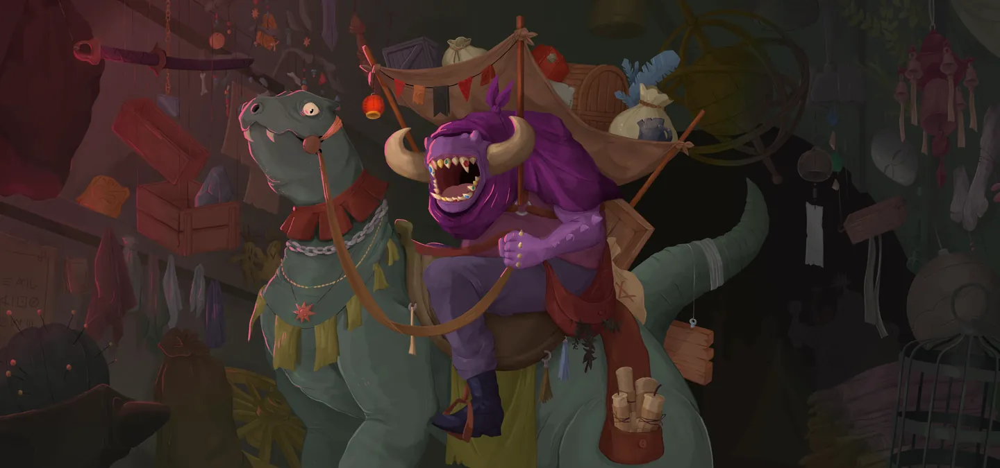

Darv — L'Amasseur
Patch de Référence :
v0.111.0 Beta(Dernier patch officiel) Acte d'apparition : Tous les actes (Remplacement) Déblocage (Epoch) :DarvEpochThème Visuel / Couleur :#512E66
🎨 Portraits & Illustrations
| Icône Ancien | Illustration Principale |
|---|---|
 |
 |
🎮 Intégration Visuelle GBA (Butano)
- Palette suggérée pour la GBA : Teinte dominante
#512E66. À mapper sur une palette 16 couleurs (15 couleurs + transparent) pour le BG de portrait. - Dimensions portrait GBA : 64x64 pixels (mode 4 bpp tilemap) positionné à
(X: 16, Y: 24)sur l'écran 240x160. - Couleur des boutons / encadrements UI :
rgba(15, 0, 20, 0.5)converti en code couleur GBA 15-bit BGR555.
📜 Rôle & Lore dans l'Ascension
Notes de conception :
* darv_any_act
* darv_replaces_third
🎲 Règles des Slots & Choix
- Nombre total d'options : 12 reliques disponibles.
- Structure des tirages : 1 slot(s).
- Slot #1 : 3 choix parmi 12 reliques présentées.
🏆 Catalogue Complet des Reliques (Classées par Tier)
⭐ Tier S (2 reliques)
 Boîte de Pandore (
Boîte de Pandore (PANDORAS_BOX)
- Tier :
S| Rareté :Ancient - Description : Transformez TOUTES vos Frappes et vos Défenses.
- Implémentation GBA C++ : Transformation de Cartes : Déclenche un sous-état d'interface (
CardSelectScene) pour transformer, épurer ou choisir des cartes.
 Pyramide runique (
Pyramide runique (RUNIC_PYRAMID)
- Tier :
S| Rareté :Ancient - Description : À la fin de votre tour, vous ne défaussez pas votre Main.
- Implémentation GBA C++ : Rétention de Main : Désactive la phase de défausse automatique en fin de tour (
TurnManager::discard_phase()).
⭐ Tier A (2 reliques)
 Astrolabe (
Astrolabe (ASTROLABE)
- Tier :
A| Rareté :Ancient - Description : Transformez 3 cartes, puis Améliorez-les.
- Implémentation GBA C++ : Transformation de Cartes : Déclenche un sous-état d'interface (
CardSelectScene) pour transformer, épurer ou choisir des cartes.
 Cage vide (
Cage vide (EMPTY_CAGE)
- Tier :
A| Rareté :Ancient - Description : Retirez 2 cartes de votre Deck.
- Implémentation GBA C++ : Transformation de Cartes : Déclenche un sous-état d'interface (
CardSelectScene) pour transformer, épurer ou choisir des cartes.
⭐ Tier B (4 reliques)
 Étoile noire (
Étoile noire (BLACK_STAR)
- Tier :
B| Rareté :Ancient - Description : Les Élites donnent une Relique supplémentaire lorsqu'ils sont vaincus.
- Implémentation GBA C++ : Effet Passif : Hook standard dans
RelicManageravec écouteur d'événement (ON_COMBAT_START,ON_TURN_START, etc.).
 Œil de geckobra (
Œil de geckobra (SNECKO_EYE)
- Tier :
B| Rareté :Ancient - Description : Au début de votre tour, piochez 2 cartes supplémentaires. Démarrez chaque combat Désorienté.
- Implémentation GBA C++ : Randomisation des Coûts : Hook dans
CardHand::draw()pour appliquer un coût d'énergie aléatoire [0..3] et +2 cartes par tour.
 Ras du cou en velours (
Ras du cou en velours (VELVET_CHOKER)
- Tier :
B| Rareté :Ancient - Description : Gagnez ⚡1⚡ au début de chaque tour. Vous ne pouvez pas jouer plus de 6 cartes par tour.
- Implémentation GBA C++ : Effet Passif : Hook standard dans
RelicManageravec écouteur d'événement (ON_COMBAT_START,ON_TURN_START, etc.).
 Grimoire poussiéreux (
Grimoire poussiéreux (DUSTY_TOME)
- Tier :
B| Rareté :Ancient - Description : Obtenez une Carte d'Ancien.
- Implémentation GBA C++ : Effet Passif : Hook standard dans
RelicManageravec écouteur d'événement (ON_COMBAT_START,ON_TURN_START, etc.).
⭐ Tier C (1 relique)
 Cloche d'appel (
Cloche d'appel (CALLING_BELL)
- Tier :
C| Rareté :Ancient - Description : Obtenez une Malédiction spéciale et 3 Reliques.
- Implémentation GBA C++ : Effet Passif : Hook standard dans
RelicManageravec écouteur d'événement (ON_COMBAT_START,ON_TURN_START, etc.).
⭐ Tier D (3 reliques)
 Ectoplasme (
Ectoplasme (ECTOPLASM)
- Tier :
D| Rareté :Ancient - Description : Vous ne pouvez plus obtenir de Pièces d'or. Gagnez ⚡1⚡ au début de chaque tour.
- Implémentation GBA C++ : Ressource Combat : Modifie l'énergie de base (
PlayerEntity::base_energy). Nécessite la gestion des malus associés (ex: pas d'or, pas de potion).
 Sozu (
Sozu (SOZU)
- Tier :
D| Rareté :Ancient - Description : Gagnez ⚡1⚡ au début de chaque tour. Vous ne pouvez plus obtenir de Potions.
- Implémentation GBA C++ : Ressource Combat : Modifie l'énergie de base (
PlayerEntity::base_energy). Nécessite la gestion des malus associés (ex: pas d'or, pas de potion).
 Pierre philosophale (
Pierre philosophale (PHILOSOPHERS_STONE)
- Tier :
D| Rareté :Ancient - Description : Gagnez ⚡1⚡ au début de chaque tour. TOUS les ennemis démarrent le combat avec 1 de Force.
- Implémentation GBA C++ : Ressource Combat : Modifie l'énergie de base (
PlayerEntity::base_energy). Nécessite la gestion des malus associés (ex: pas d'or, pas de potion).
💬 Dialogues & Répliques
Les dialogues s'affichent dans la boîte de dialogue inférieure (240x40 px) sur la GBA avec défilement fluide au bouton A :
🗣️ Première Rencontre (Toutes runs confondues)
- 👑 Ancien :
...où ai-je mis... Oh !
Tu viens / Vous venez voir ma collection ?! Sers-toi / Servez-vous dans ce tas au fond, tu feras / vous ferez bon usage de ce que tu trouveras / vous trouverez !
🗣️ Soldat de Fer (Ironclad)
-
👑 Ancien :
Le retour du guerrier flamboyant !
J'ai juste ce qu'il vous faut ! -
👑 Ancien :
Content de voir que vous leur mettez encore la misère !
-
👑 Ancien :
J'ai bien gardé votre grosse lame... mais je n'ai trouvé personne pour la remettre en état.
-
👤 IRONCLAD :
Le Soldat de Fer fixe Darv du regard.
-
👑 Ancien :
L'Architecte en sait peut-être quelque chose.
🗣️ La Silencieuse (Silent)
-
👑 Ancien :
Vous aussi, de retour dans la Tour ?
Impossible de résister à tout ce butin, n'est-ce pas ? -
👑 Ancien :
Je vous échangerais bien quelque chose de sympathique contre ce joli trophée que vous baladez !
-
👑 Ancien :
Bien dommage que vous ne vous souveniez pas de ma générosité !
Oui oui, Neow, je sais bien... -
👤 SILENT :
...
-
👑 Ancien :
Bien ! Trouvons-vous un équipement convenable pour cette confrontation finale !
🗣️ Le Défectueux (Defect)
-
👑 Ancien :
Quelle belle pièce de pacotille / Quel beau morceau de ferraille / Quel joli bloc de bric-à-brac tu fais / vous faites !
-
👤 DEFECT :
<3
-
👑 Ancien :
Toujours en service, à ce que je vois... Voyons ce qu'on peut faire pour te mettre à jour !
-
👑 Ancien :
J'ai bien conservé ce que ton ami euhh... hum.
Oublie ce que j'ai dit !! -
👤 DEFECT :
-
👑 Ancien :
Ma petite ferraille, oublie ce que j'ai dit !
🗣️ Le Régent (Regent)
-
👑 Ancien :
Qu'est-ce qui vous amène parmi nous ? Vous voulez jeter un œil à ma collection ?
-
👤 REGENT :
Volontiers, je suis un amateur de biens rares...
-
👑 Ancien :
Formidable !
-
👑 Ancien :
Déjà de retour, votre Altesse ?!
-
👑 Ancien :
J'ai quelque chose pour vous, mon nouvel ami !
-
👤 REGENT :
Je suis tout ouïe !
-
👑 Ancien :
Eh bien, je voudrais vous l'offrir mais l'Architecte me l'a dérobé !!
Vous aiderez bien un ami en détresse ?
🗣️ La Nécrolieuse (Necrobinder)
-
👑 Ancien :
Je vois que vous n'êtes pas là pour plaisanter. Qu'est-ce que je peux faire pour vous, mademoiselle ?
-
👤 NECROBINDER :
Qu'est-ce que vous avez pour m'aider à tuer un homme bien détestable ?
-
👑 Ancien :
Eh bien... allez jeter un œil là-bas !
-
👑 Ancien :
Toujours sur votre quête sanglante ? Ce n'est pas moi qui vais vous arrêter !
-
👑 Ancien :
Ce tome paraît lié à votre âme, il est encore plus ancien que vous.
-
👤 NECROBINDER :
Comment l'avez-vous obtenu ?
-
👑 Ancien :
Les choses effrayantes ont une fâcheuse tendance à finir dans ma collection.
🗣️ Générique (Tout Personnage)
-
👑 Ancien :
Tiens, emporte / Tenez, emportez une de ces gemmes oubliées avec toi / vous !
-
👑 Ancien :
J'ai plein de choses à faire aujourd'hui !
Prends ce que tu veux / Prenez ce que vous voulez du tas là-bas !
⬅️ Retour au Sommaire de la Bible | ⚙️ Spécifications Techniques GBA